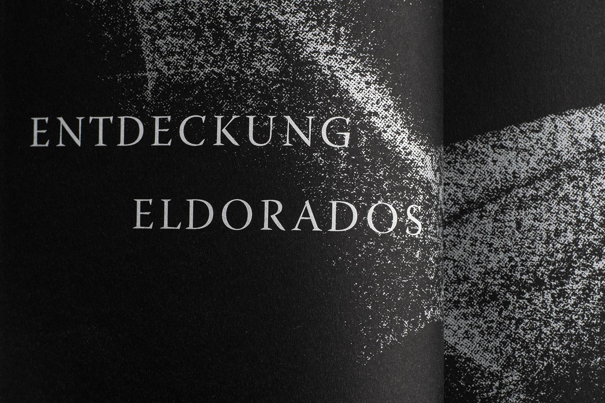
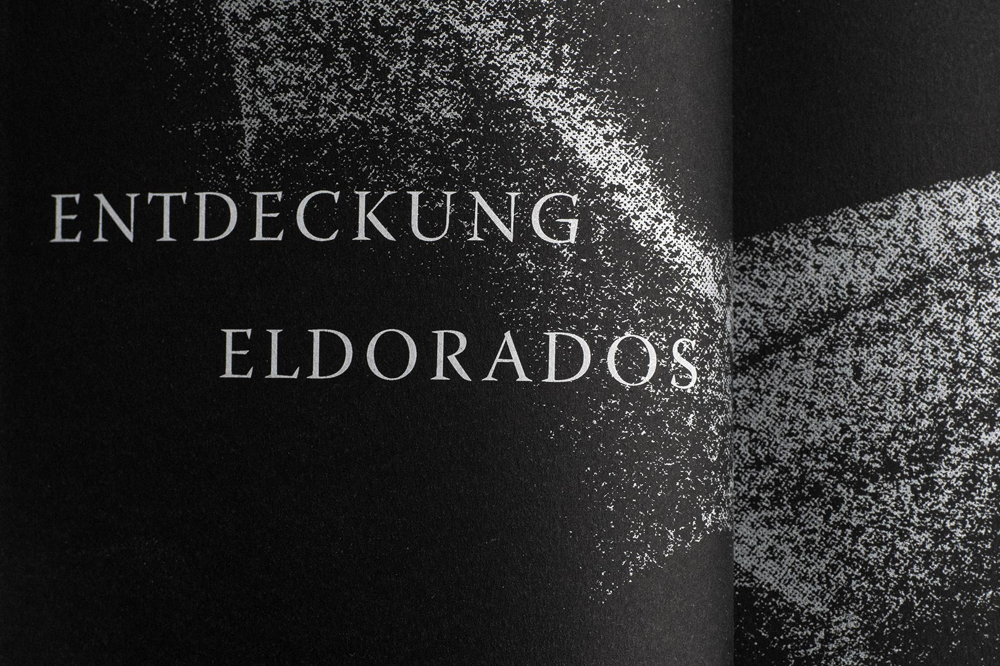

‹Bewegung› umgesetzt mit 5 verschiedenen Techniken (à 50 Zeichnungen) auf Papier.
Aus dieser Sammlung wählte ich jeweils eine Zeichnung zur Erstellung der Kapitelseiten meines Buchprojekts ‹Sternstunden der Menschheit› von Stefan Zweig. Die analogen Entwürfe wurden zur Weiterverarbeitung digitalisiert und im Siebdruckverfahren mit Silber bedruckt

 
